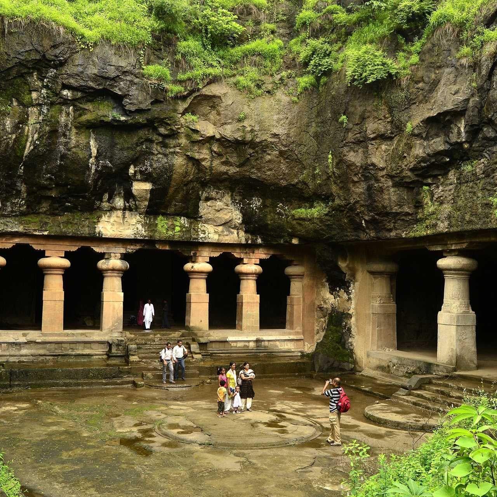

Elephanta Caves
The Elephanta Caves, located on Elephanta Island in Mumbai Harbor, are a UNESCO World Heritage site known for their impressive rock-cut sculptures and cave temples. Dating back to the 5th-7th centuries, these caves are dedicated primarily to Lord Shiva and showcase the remarkable artistry of ancient Indian craftsmen.
History
According to legend, the caves were originally created by the Pandavas from the Mahabharata during their exile. Another belief suggests that they were built by the demon king Banasura as a tribute to Lord Shiva. The caves later came under the rule of various dynasties, including the Mauryas and Chalukyas, before being rediscovered by the Portuguese in the 16th century, who named the island "Elephanta" after finding a large elephant sculpture at the site.
Architecture
The Elephanta Caves consist of a series of rock-hewn caves featuring intricate sculptures, grand pillars, and detailed carvings. The most prominent among them is the Great Cave, which houses the iconic 20-foot-tall Trimurti sculpture depicting the three aspects of Lord Shiva—Creator, Preserver, and Destroyer. The caves also contain various panels illustrating mythological events, finely carved walls, and spacious courtyards, showcasing a blend of Hindu and Buddhist influences in their architectural style.